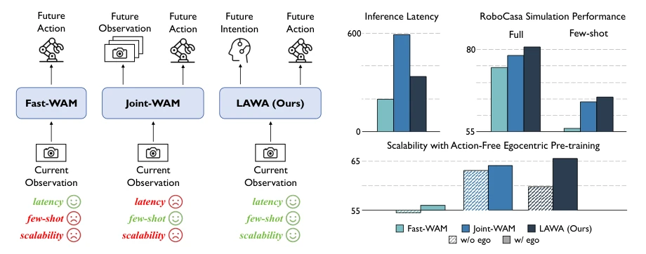
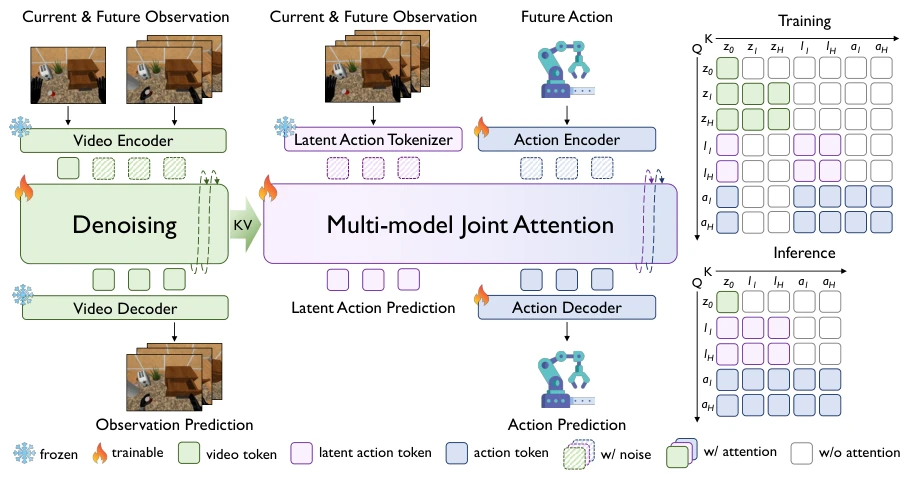
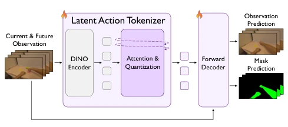
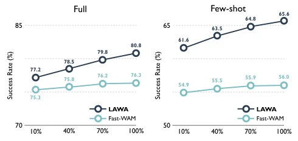

具身智能的核心难点在于机器人不仅要反应当前，还要理解交互如何展开。世界动作模型（WAMs）通过预测未来视觉动态来辅助决策，但存在明显的效率瓶颈。Joint-WAM 类方法（如 Bi et al. 2026 提到的 Motus 等）虽然能显式预测未来观测，但测试时迭代去噪未来视频导致推理延迟巨大，阻碍了实机控制。Fast-WAM（Yuan et al. 2026b）试图移除测试时的未来视频分支以提升速度，但我们的对照实验显示，这种“短视”策略在少样本和分布外场景下泛化性显著下降。现有范式在“泛化性能”与“推理效率”之间难以兼得：保留观测空间想象成本太高，丢弃则丢失任务进展的显式表征。因此，研究动机在于寻找一种既能保留未来意图表征，又能避免昂贵视觉生成的中间路径，以平衡性能、泛化与延迟。
—

Figure 1: Conceptual and quantitative comparison of WAM paradigms. Fast-WAM, our primary performance baseline, removes test-time future imagination but generalizes worse; Joint-WAM predicts future observations and serves as the efficiency reference. LAWA treats latent actions as future intentions, substantially improving performance over Fast-WAM while matching Joint-WAM at lower latency. Moreover, LAWA obtains larger downstream gains from action-free data than both alternatives under matched video exposure and paradigm-specific pre-training objectives.
方法Method
LAWA 的整体架构将未来想象从观测空间迁移到紧凑的潜在动作空间。首先，构建一个离散潜在动作 Tokenizer，基于 ViPRA（Routray et al. 2026）改进，利用 DINOv2（Oquab et al. 2023）提取特征，通过差分编码帧间动态，并映射到可学习码本生成离散 Token。为了强化交互区域表征，引入了基于 SAM 2（Ravi et al. 2025）的掩码预测辅助任务，自动标注手部和操作器区域，防止 Tokenizer 仅关注静态外观。其次，进行动作无关的自监督预训练，对齐不同数据源的运动速度分布，并加权采样保留机器人领域 grounding。在策略训练阶段，冻结 Tokenizer，通过多模型联合注意力机制（Multi-model Joint Attention）联合训练视频、潜在动作和动作去噪专家。结构化注意力掩码确保动作专家能利用演化的潜在意图，但无法访问未来视频信息。推理时，丢弃未来视频分支，仅联合去噪潜在意图和可执行动作块，从而在不生成未来观测的情况下保留未来感知的动作生成能力。
—

Figure 2: Overview of our LAWA. A structured mask controls information flow among the three branches. At inference, LAWA discards the future-video branch and jointly denoises compact latent intentions and action chunks, retaining future-aware action generation without explicitly predicting future observations. The language instruction is omitted for better illustration.

Figure 3: Action-free egocentric pre-training pipeline of the latent action tokenizer.
Figure 6: Real-world tasks. Gear and Battery involve assem- bly with fine-grained operations, while Block and Laboratory require long-horizon manipulation. Colored arrows indicate the required object transfers from their initial locations (blue) to their target locations (red).
其他图片Other Figures

Figure 5: Egocentric pre-training scalability comparison. Under matched video fractions, LAWA obtains larger down- stream gains than Fast-WAM in both data settings.